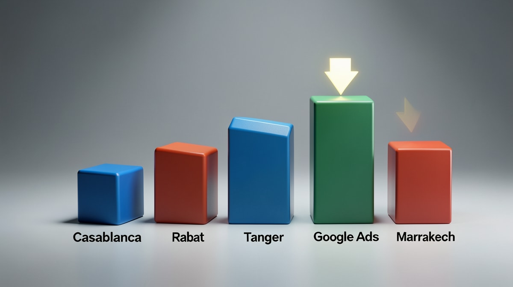

Meta Ads vs Google Ads : Le Duel Budgétaire qui Décide de Votre Croissance au Maroc
En résumé : Meta Ads vs SEA : Le Guide Budgétaire Décisif pour les Dirigeants Marocains en 2024 est une démarche stratégique clé dans le domaine du Meta Ads & Social Ads. Elle permet aux entreprises au Maroc d’optimiser durablement leurs performances digitales, d’augmenter leur visibilité et de maximiser le retour sur investissement (ROI) de leurs campagnes.
En tant que dirigeant, vous êtes confronté à une décision cruciale : où investir votre budget marketing digital pour un retour sur investissement maximal? Meta Ads (Facebook & Instagram) et Google Ads (SEA) sont les deux piliers de l'acquisition payante, mais ils répondent à des logiques radicalement différentes. Cet article vous offre un comparatif décisionnel basé sur des données chiffrées, des cas concrets au Maroc, et une méthodologie d'allocation budgétaire pour maximiser votre ROI.
Définition : Meta Ads & Social Ads
Les Meta Ads (anciennement Facebook Ads) sont des publicités diffusées sur Facebook, Instagram, Messenger et Audience Network, basées sur le ciblage démographique, comportemental et d'intérêts. Les Social Ads englobent l'ensemble des publicités sur les réseaux sociaux (LinkedIn, TikTok, Snapchat). Leur force : générer de la demande en touchant des utilisateurs qui n'ont pas encore exprimé d'intention d'achat, via des formats visuels et vidéo.
1. Analyse Comparative des Coûts : SEA vs Meta Ads au Maroc
Le premier réflexe d'un dirigeant est de comparer les coûts unitaires. Mais attention : le CPC (coût par clic) n'est qu'un indicateur partiel. Le vrai KPI, c'est le coût d'acquisition client (CAC) et le ROAS (retour sur dépenses publicitaires).
Google Ads (SEA) : Le CPC moyen au Maroc varie de 5 MAD (recherche longue traîne) à 50 MAD (mots-clés concurrentiels comme 'assurance auto', 'crédit immobilier'). Pour les secteurs B2B, le CPC moyen est de 15-25 MAD. Mais le CAC final est souvent 5 à 10 fois le CPC, car le taux de conversion moyen est de 2-3% sur Google Search. Exemple : un cabinet de recrutement à Casablanca dépensait 20 000 MAD/mois sur Google Ads, générant 25 leads à 800 MAD/lead. Un CAC trop élevé pour un service à 5000 MAD de marge.
Meta Ads : Le CPM (coût pour 1000 impressions) au Maroc tourne autour de 40-80 MAD, et le CPC moyen est de 2-5 MAD. Mais le taux de conversion est plus faible (0,5-1,5% en moyenne). Le CAC final? Pour une campagne bien optimisée, il peut descendre à 150-300 MAD en B2C. Exemple : une boutique de vêtements en ligne à Marrakech a investi 15 000 MAD sur Meta Ads, généré 120 ventes à 125 MAD/lead, avec un panier moyen de 600 MAD. ROAS de 4,8x.
Conclusion intermédiaire : En B2C, Meta Ads offre un CAC 2 à 4 fois inférieur au SEA. En B2B, l'écart se réduit, mais une stratégie de retargeting sur Meta peut diviser le CAC par 2.
2. Stratégie d'Allocation Budgétaire : Le Modèle 60/40 (ou l'inverse)
La règle empirique que nous appliquons chez DatRey :
- Si votre objectif est la notoriété et la génération de demande (B2C, e-commerce, services grand public) : Allouez 60% à Meta Ads, 40% à Google Ads. Meta crée la demande, Google la capture.
- Si votre objectif est la capture de demande immédiate (B2B, services urgents, recherche à forte intention) : Allouez 70% à Google Ads, 30% à Meta Ads (retargeting + branding).
Cas pratique : une agence immobilière à Tanger. Objectif : vendre des lots de terrain. Google Ads sur 'terrain à vendre Tanger' : CPC 35 MAD, CAC 1200 MAD. Meta Ads avec ciblage géographique et intérêts 'investissement immobilier' : CPC 4 MAD, CAC 450 MAD. Résultat : en basculant 50% du budget Google vers Meta, le nombre de leads a augmenté de 80% pour le même budget.
3. Les Pièges à Éviter Absolument
Piège n°1 : Croire que Meta Ads ne marche pas pour le B2B. Faux. Nous avons accompagné un éditeur de logiciels RH à Rabat. En ciblant les DRH sur LinkedIn (trop cher : CPC 80 MAD) puis en les retargetant sur Meta, le CAC est passé de 650 MAD à 180 MAD.
Piège n°2 : Négliger le tracking. Sans pixel Meta et conversion API, vous pilotez à l'aveugle. Au Maroc, 60% des annonceurs n'ont pas de tracking fiable, ce qui fausse totalement le ROI.
Piège n°3 : Copier les stratégies occidentales. Le marché marocain a ses spécificités : forte pénétration mobile, WhatsApp comme canal de conversion, sensibilité au prix. Une campagne qui marche en France peut échouer au Maroc.
4. Études de Cas Chiffrées (Données Réelles DatRey)
Cas 1 : E-commerce de cosmétiques (Casablanca)
Budget mensuel : 50 000 MAD. Répartition initiale : 70% Google, 30% Meta. CAC Google : 1200 MAD. CAC Meta : 280 MAD. Après optimisation (60% Meta, 40% Google) : CAC global : 350 MAD, ROAS : 5,2x, soit une augmentation de 40% du chiffre d'affaires à budget constant.
Cas 2 : Formation professionnelle (Rabat)
Objectif : leads qualifiés pour des formations certifiantes (prix 15 000 MAD). Google Ads : CAC 900 MAD, Meta Ads (ciblage intérêts + lookalike) : CAC 320 MAD. En combinant les deux canaux avec un séquençage (Meta en top of funnel, Google en retargeting), le CAC est descendu à 250 MAD.
5. Recommandations Stratégiques pour 2024
- Auditez vos campagnes actuelles : Identifiez les fuites budgétaires (mots-clés trop chers, audiences mal ciblées).
- Testez la synergie : Ne choisissez pas, combinez. Une étude de DatRey montre que les entreprises qui utilisent les deux canaux avec un message cohérent obtiennent un ROAS 40% supérieur.
- Investissez dans la créativité : Sur Meta, la qualité de la vidéo et du copywriting fait la différence. Une bonne créa peut diviser le CPC par 3.
- Utilisez le retargeting cross-canal : Les visiteurs Google qui n'ont pas converti peuvent être rattrapés sur Meta à moindre coût.
Conclusion : Votre Prochaine Décision Budgétaire
Le choix entre Meta Ads et Google Ads n'est pas un dilemme, c'est une opportunité d'optimisation. Chez DatRey, nous avons développé une méthodologie propriétaire pour allouer votre budget de manière dynamique en fonction de vos KPIs en temps réel. Nos clients au Maroc (Casablanca, Rabat, Tanger, Marrakech) constatent en moyenne une réduction de 30% de leur CAC et une augmentation de 50% de leur ROAS en 3 mois.
Ne laissez pas votre budget publicitaire partir en fumée. Demandez votre Audit Digital Gratuit dès aujourd'hui : notre équipe analyse vos campagnes actuelles et vous livre un plan d'action personnalisé sous 48h. Cliquez ici pour réserver votre audit.